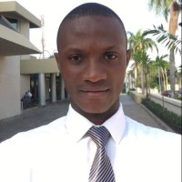
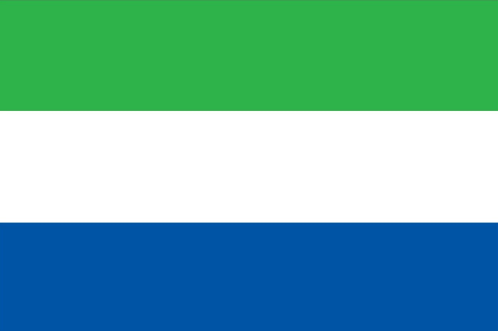

Albert Pessima
About Me
My name is Albert Pessima, and I was born in Rotifunk, a beautiful town in the Southern Province of Sierra Leone. I currently live in Freetown with my family, where we enjoy a peaceful and fulfilling life together. Professionally, I work as a Project Manager at a construction company, where I oversee project planning, coordination, and successful implementation. Beyond my professional life, I have a strong passion for technology and computers, which inspired me to pursue studies in software development. I am deeply interested in how technology can be used to solve real-world problems and improve lives—particularly in the areas of education and community development. In my leisure time, I love spending quality moments with my family, especially at the beach, where we often relax and enjoy the ocean breeze. I’m also an enthusiastic football fan who appreciates the teamwork, strategy, and excitement that the game brings.
Freetown, Sierra Leone

Sierra Leone is a country located on the west coast of Africa. It is bordered by Guinea to the north and east, Liberia to the southeast, and the Atlantic Ocean to the west and southwest. The capital city of Sierra Leone is Freetown. The country has a diverse culture with over 16 ethnic groups, each with its own unique traditions and customs. Sierra Leone is known for its beautiful beaches, rich history, and vibrant music scene. The country has a tropical climate with a rainy season from May to November and a dry season from December to April. Sierra Leone is also home to a variety of wildlife, including chimpanzees, elephants, and various bird species.